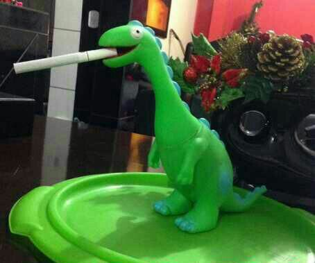

Sobre Chester:
Chester foi encontrado por Matheus Canella enquanto o mesmo estava indo fazer compras, e por Chester ser um rapaz muito bacana Matheus Canella resolveu ser amigo do pacato dinossaurinho, tanto que ofereceu um pepino que canta a música 'Cher - Believe' para que selassem a amizade.
Chester possui uma incrível habilidade de imitar o Selton Melo, tanto que ele chegou a competir em um concurso de imitadores cujo os prêmios eram 3.000 dólares e um CD do Amado Batista. Mas Chester não conseguiu ganhar o concurso perdendo somente para o golfinho de cartola que canta igual ao Ed Mota, mas Chester conseguiu o prêmio de participação que era uma viagem de avião pelo Alabama.